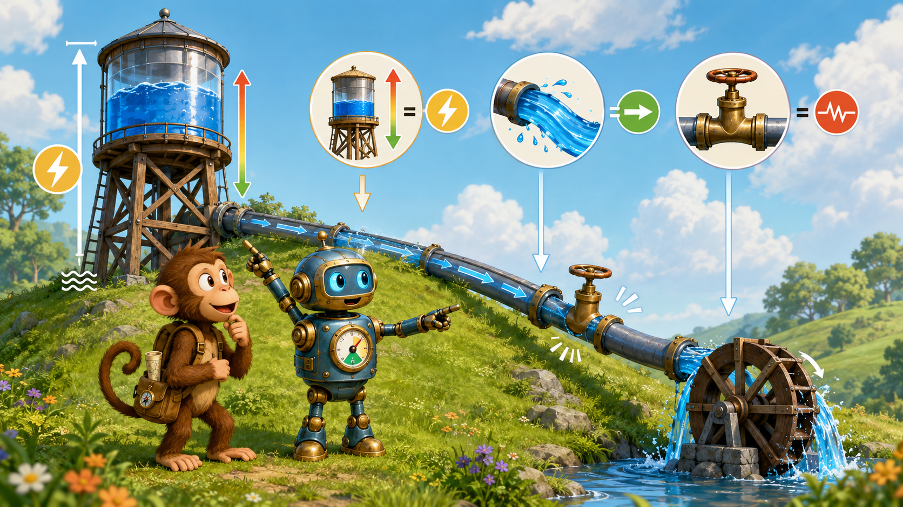
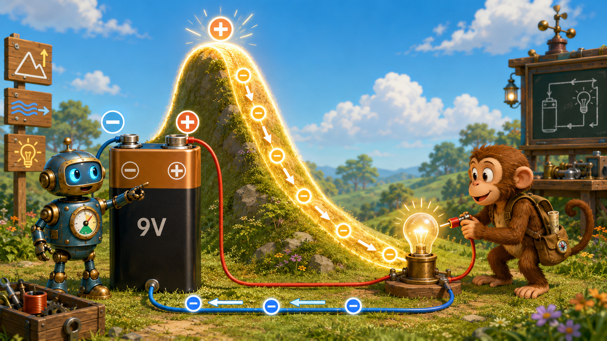
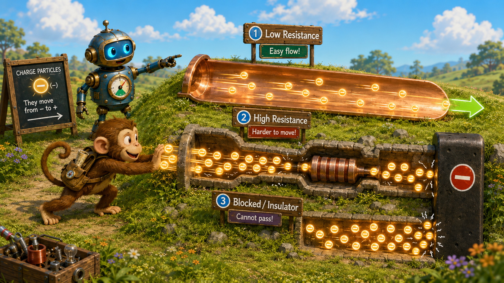
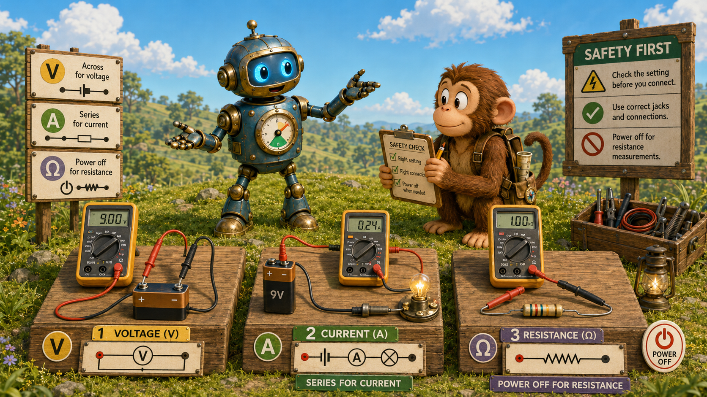

Potential energy
A charge placed in an electric field can have electric potential energy, much as a raised object has gravitational potential energy.
Lesson 2 · Motion and Control
Lesson 1 described charge and the fields surrounding it. This lesson follows the next step: what happens when electric potential pushes charge through a path, and how components control that motion.

Charge can possess stored electrical energy because of its position in an electric field.
A charge placed in an electric field can have electric potential energy, much as a raised object has gravitational potential energy.
Electric potential describes potential energy per unit of charge. It tells us how much electrical energy is available at a location for each coulomb of charge.
How is electric potential similar to height?
Both describe stored energy associated with position. A difference in height can make an object fall; a difference in electric potential can make charge move.
Monkey asks, “So charge can sit at the top of an electrical hill?” Robot replies, “Yes. Voltage tells us how far downhill it can go.”
A charged capacitor, a battery, and even a static-charged balloon can store electrical potential energy.
The unit of electric potential, the volt, honors Alessandro Volta, whose early battery made sustained electrical experiments possible.
Voltage is not an amount stored at one isolated point; it is a difference between two points.
Voltage is electric potential difference: the change in electrical energy per unit charge between two locations.
Voltage is measured in volts. One volt equals one joule of energy per coulomb of charge.
A battery uses chemical processes to maintain a difference in potential between its terminals.

Can voltage exist even when no current is flowing?
Yes. An open battery still has a voltage across its terminals even though the broken path prevents sustained current.
Why must voltage always be measured between two points?
Because voltage is a difference in electric potential. A meter compares one location with another.
Current tells us how quickly charge passes through part of a circuit.
Electric current is the amount of charge passing a point per unit of time. It is measured in amperes, or amps.
One ampere means one coulomb of charge passes a point each second.
By convention, current direction is drawn from positive toward negative through the external circuit.
In metal wires, electrons actually drift in the opposite direction. The convention was established before electrons were understood.
Does current get “used up” as it passes through a resistor?
No. Charge is conserved. In a simple series circuit, the same current passes through each component, although electrical energy is transferred.
Monkey says, “The lamp eats the current.” Robot answers, “The lamp uses energy, not charge. The charge keeps circulating.”
A microcontroller input may use tiny currents, while a motor, heater, or relay coil may require much more. Matching the source and load matters.
The ampere is named for André-Marie Ampère, whose work helped establish the relationship between electricity and magnetism.
Resistance describes how strongly a material or component opposes charge flow.
Resistance is measured in ohms, represented by the symbol Ω.
Material choice matters. Copper has low resistance; rubber and glass have extremely high resistance.
Longer, thinner conductors generally have more resistance than shorter, thicker conductors of the same material.

Why do resistors often become warm?
Moving charges collide with atoms in the material, transferring electrical energy into thermal energy.
What happens to resistance in a metal wire if the wire becomes longer?
Its resistance increases because charges encounter a longer path through the material.
Voltage, current, and resistance are linked by one of the most useful relationships in electronics.
V = I × R
Voltage equals current multiplied by resistance.
V = IR I = V/R R = V/I
Choose the form that isolates the unknown quantity.
A 12 V source across a 6 Ω resistor produces 2 A because 12 ÷ 6 = 2.
A 5 V source driving 0.01 A requires 500 Ω because 5 ÷ 0.01 = 500.
A 100 Ω resistor carrying 0.02 A has 2 V across it because 0.02 × 100 = 2.
A 9 V battery is connected across a 3 Ω resistor. What current flows?
I = V/R = 9/3 = 3 A.
If voltage stays constant and resistance doubles, what happens to current?
Current is cut in half because current is inversely proportional to resistance when voltage is fixed.
Ohm's law helps choose LED resistors, estimate relay-coil current, check voltage drops, and decide whether a power supply is adequate.
Georg Ohm published the relationship in the 1820s. It was initially resisted by some contemporaries but became foundational to electrical engineering.
Power describes how quickly electrical energy is transferred or converted.
P = V × I
Power equals voltage multiplied by current.
Power is measured in watts. One watt equals one joule of energy transferred per second.
Using Ohm's law, resistor power can also be calculated as P = I²R or P = V²/R.
A device uses 12 V and draws 2 A. How much power does it consume?
P = VI = 12 × 2 = 24 W.
Why must a resistor's wattage rating be considered?
If the resistor dissipates more power than it is rated for, it can overheat, drift in value, fail, or damage nearby parts.
A multimeter behaves differently depending on what is being measured.
Measure voltage in parallel, placing the probes across two points while the circuit is energized.
Measure current in series by opening the path and inserting the meter so current passes through it.
Measure resistance with power removed, ideally isolating the component from other circuit paths.

What can happen if a meter set to current is placed directly across a battery?
The meter presents a very low-resistance path, producing a large current that may blow the meter fuse, damage equipment, or create a hazard.
Monkey asks, “Why can't I test amps the same way I test volts?” Robot answers, “Because the ammeter becomes part of the road, not an observer standing beside it.”
Before measuring, verify the selector position, lead jacks, expected range, circuit power state, and whether the measurement belongs in series or parallel.
Voltage measurements are often the least disruptive first step. They reveal whether power is present without opening the circuit.
Circuit arrangement determines how voltage and current are distributed.
Components share one path. The same current passes through each component, while voltage drops divide among them. Resistances add directly.
Rₜ = R₁ + R₂ + ...
Components share the same two connection points. Each branch has the same voltage, while current divides among branches.
1/Rₜ = 1/R₁ + 1/R₂ + ...
Two 100 Ω resistors are connected in series. What is the total resistance?
200 Ω, because series resistances add.
Two identical 100 Ω resistors are connected in parallel. What is the total resistance?
50 Ω. Two equal resistors in parallel have half the resistance of either resistor alone.
Household outlets are wired in parallel so each load receives the full supply voltage and can operate independently.
Adding a parallel branch lowers total resistance and increases total source current. This is why power-source and conductor ratings matter.
The central relationships to carry into later circuit lessons.
Complete the sentence: voltage is the push, current is the _____, and resistance is the opposition.
Flow.
What two equations from this lesson will be used constantly in electronics?
Ohm's law, V = IR, and the power equation, P = VI.